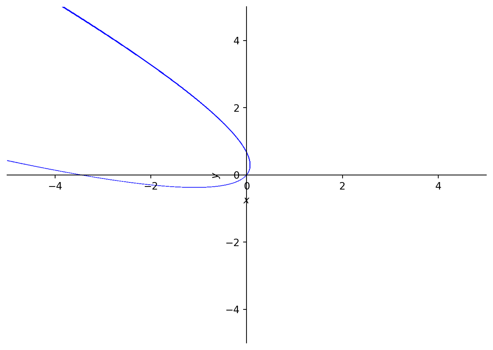
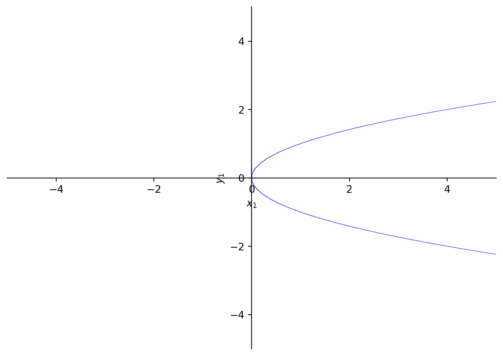

from sympy import *
A = Matrix([[3, -2, 4, -2], [5, 3, -3, -2], [5, -2, 2, -2], [5, -2, -3, 3]])
A\(\displaystyle \left[\begin{matrix}3 & -2 & 4 & -2\\5 & 3 & -3 & -2\\5 & -2 & 2 & -2\\5 & -2 & -3 & 3\end{matrix}\right]\)
\[ \newcommand{\Z}{\mathbb Z} \newcommand{\Q}{\mathbb Q} \newcommand{\R}{\mathbb R} \newcommand{\C}{\mathbb C} \newcommand{\F}{\mathbb F} \newcommand{\K}{\mathbb K} \newcommand{\L}{\mathbb L} \newcommand{\N}{\mathbb N} \newcommand{\sym}[1]{\operatorname{Sym}(#1)} \newcommand{\GLV}[1]{\operatorname{GL}(#1)} \newcommand{\SLV}[1]{\operatorname{SL}(#1)} \newcommand{\GL}[2]{\operatorname{GL}(#1,#2)} \newcommand{\SL}[2]{\operatorname{SL}(#1,#2)} \newcommand{\lxor}{\dot\lor} \newcommand{\cond}{\Rightarrow} \newcommand{\bicond}{\Leftrightarrow} \newcommand{\mdc}[2]{\operatorname{mdc}(#1,#2)} \newcommand{\grau}[1]{\operatorname{grau}(#1)} \newcommand{\real}[1]{\mathfrak R(#1)} \newcommand{\imag}[1]{\mathfrak I(#1)} \newcommand{\argz}[1]{\mbox{arg}(#1)} \DeclareMathOperator{\sen}{sen} \newcommand{\cis}[1]{\cos #1+i\sen #1} \newcommand{\E}{\mathbb E} \newcommand{\aut}[1]{\textrm{Aut}(#1)} \newcommand{\fix}[1]{\textrm{Fix}(#1)} \newcommand{\gal}[2]{\textrm{Gal}(#1:#2)} \newcommand{\overbar}[1]{\mkern 1.5mu\overline{\mkern-1.5mu#1\mkern-1.5mu}\mkern 1.5mu} \newcommand{\ul}[1]{\underline{#1}} \]
Exemplo 5.1 Considere a matriz \[ A = \begin{pmatrix} 3 & -2 & 4 & -2\\ 5 & 3 & -3 & -2\\ 5 & -2 & 2 & -2\\ 5 & -2 & -3 & 3 \end{pmatrix} \] Vamos calcular os seguintes atributos de \(A\):
Primeiro, vamos definir a matrix \(A\):
from sympy import *
A = Matrix([[3, -2, 4, -2], [5, 3, -3, -2], [5, -2, 2, -2], [5, -2, -3, 3]])
A\(\displaystyle \left[\begin{matrix}3 & -2 & 4 & -2\\5 & 3 & -3 & -2\\5 & -2 & 2 & -2\\5 & -2 & -3 & 3\end{matrix}\right]\)
O polinômio caraterístico de \(A\) é definido como \(\det(A-tI)\) onde \(t\) é um indeterminante e \(I\) é a matriz identidade \(4\times 4\). O polinômio caraterístico pode ser determinado usando diretamente esta definição. Note como o indeterminante t e a matriz identidade são definidos em SymPy.
t = var('t')
I4 = eye(4)
p = det(A-t*I4)
p\(\displaystyle t^{4} - 11 t^{3} + 29 t^{2} + 35 t - 150\)
Os autovalores de \(A\) são as raízes do polinômio caraterístico p. As raízes de p podem ser econtradas usando p.factor().
p.factor()\(\displaystyle \left(t - 5\right)^{2} \left(t - 3\right) \left(t + 2\right)\)
Vemos que as raízes são \(5\), \(4\), \(-2\).
A mesma informação, pode ser obtida por rodar A.charpoly()e A.eigenvals().
A.charpoly()\(\displaystyle \operatorname{PurePoly}{\left( \lambda^{4} - 11 \lambda^{3} + 29 \lambda^{2} + 35 \lambda - 150, \lambda, domain=\mathbb{Z} \right)}\)
A.eigenvals(){3: 1, -2: 1, 5: 2}Note que A.eigenvals() devolve os autovalores com as suas multiplicades. Os autovalores \(3\) e \(-2\) têm multiplicade \(1\) (eles são autovalores simples), enquanto o autovalor \(5\) tem multiplicidade 2 (ele é autovalor múltipla). O mesmo pode ser observado na fatoração do polinômio caraterístico em cima, pois \((t-5)\) aparece no segundo grau na fatoração.
Exercício 5.1 Seguindo o Exemplo 5.1, calcule o polinômio caraterístico e os autovalores da matriz \[ B = \begin{pmatrix} -47 & -240 & 144 & 374 & -92 \\ -56 & -325 & 214 & 520 & -124 \\ 40 & 200 & -119 & -312 & 76\\ -48 & -264 & 168 & 419 & -100\\ 36 & 200 & -128 & -316 & 79 \end{pmatrix} \]
Exemplo 5.2 Os autovetores da matriz \(A\) no Exemplo 5.1 podem ser determinados usando A.eigenvects().
autovet = A.eigenvects()
autovet[(-2,
1,
[Matrix([
[0],
[1],
[1],
[1]])]),
(3,
1,
[Matrix([
[1],
[1],
[1],
[1]])]),
(5,
2,
[Matrix([
[1],
[1],
[1],
[0]]),
Matrix([
[ 0],
[-1],
[ 0],
[ 1]])])]Observe que obtivemos um autovetor para o autovalor \(-2\), um para \(3\), mas dois para \(5\). Isso acontece por causa das multiplicidades dos autovalores.
Para verificar que os vetores obtidos são de fato autovetores, podemos fazer a seguinte conta.
autovet[0][2][0]\(\displaystyle \left[\begin{matrix}0\\1\\1\\1\end{matrix}\right]\)
A*autovet[0][2][0]\(\displaystyle \left[\begin{matrix}0\\-2\\-2\\-2\end{matrix}\right]\)
Observe que, o vetor autovet[0][2][0] multiplicado por A será multiplicado por \(-2\). Ou seja, este vetor é de fato autovetor para o autovalor \(-2\).
Agora, vamos diagonalizar a matriz \(A\) criando uma matriz \(P\) que contém autovetores de \(A\) LI.
# Começamos pela matriz nula 4x4
P = zeros(4, 4)
# colocamos nas colunas de P os autovetores de A
P[:,0] = autovet[0][2][0]
P[:,1] = autovet[1][2][0]
P[:,2] = autovet[2][2][0]
P[:,3] = autovet[2][2][1]
P\(\displaystyle \left[\begin{matrix}0 & 1 & 1 & 0\\1 & 1 & 1 & -1\\1 & 1 & 1 & 0\\1 & 1 & 0 & 1\end{matrix}\right]\)
Ora verifique, que \(P^{-1}AP\) é diagonal.
P**-1*A*P\(\displaystyle \left[\begin{matrix}-2 & 0 & 0 & 0\\0 & 3 & 0 & 0\\0 & 0 & 5 & 0\\0 & 0 & 0 & 5\end{matrix}\right]\)
Observe que as entradas diagonais de \(P^{-1}AP\) são exatamente os autovalores \(-2\), \(3\) e \(5\). Além disso, \(5\) aparece \(2\) vezes, pois ele teve dois autoveores LI.
Exercício 5.2 Seguindo os passos do Exemplo 5.2,
Neste exemplo, vamos ver como identificar cônicas usando a técnica da diagonalização.
Exemplo 5.3 Considere a cônica que também foi considerada na aula: \[ f(x,y) = x^2+2\sqrt 3xy+3y^2+2\sqrt 3x-2y=0. \] Desta equação é difícil identificar se ela representa uma elipse, hipérbole, ou parábola. No entanto, nós podemos definir esta curva e visializá-la em Python.
x, y = var('x y')
f = x**2+2*sqrt(3)*x*y+3*y**2+2*sqrt(3)*x-2*y
f\(\displaystyle x^{2} + 2 \sqrt{3} x y + 2 \sqrt{3} x + 3 y^{2} - 2 y\)
plot_implicit(f)
Do desenho fica claro que esta cônica é uma parábola.
Ora, vamos definir a matriz que corresponde à cônica e calcular os seus autovalores e autovetores.
C = Matrix( [[1,sqrt(3)],[sqrt(3),3]])
C\(\displaystyle \left[\begin{matrix}1 & \sqrt{3}\\\sqrt{3} & 3\end{matrix}\right]\)
C.eigenvals(){4: 1, 0: 1}C.eigenvects()[(0,
1,
[Matrix([
[-sqrt(3)],
[ 1]])]),
(4,
1,
[Matrix([
[sqrt(3)/3],
[ 1]])])]Daqui, definimos os autovetores v1 e v2.
v1 = C.eigenvects()[0][2][0]
v2 = C.eigenvects()[1][2][0]
v1\(\displaystyle \left[\begin{matrix}- \sqrt{3}\\1\end{matrix}\right]\)
v2\(\displaystyle \left[\begin{matrix}\frac{\sqrt{3}}{3}\\1\end{matrix}\right]\)
Note que, os autovetores v1 e v2 são ortogonais. Isso ocorre, porque a matriz \(C\) é simétrica. Para fazer a diagonalização ortogonal, precisamos de autovetores ortonormais. Para isso, dividumos os autovetores com as suas normas.
v1 = v1/v1.norm()
v2 = v2/v2.norm()
v1\(\displaystyle \left[\begin{matrix}- \frac{\sqrt{3}}{2}\\\frac{1}{2}\end{matrix}\right]\)
v2\(\displaystyle \left[\begin{matrix}\frac{1}{2}\\\frac{\sqrt{3}}{2}\end{matrix}\right]\)
Ora, definimos a matriz \(P\) que contém os autovetores ortonormais nas suas colunas.
P = zeros(2,2)
P[:,0] = v1
P[:,1] = v2
P\(\displaystyle \left[\begin{matrix}- \frac{\sqrt{3}}{2} & \frac{1}{2}\\\frac{1}{2} & \frac{\sqrt{3}}{2}\end{matrix}\right]\)
Veja que \(P\) é matriz ortogonal; ou seja \(P^tP=I\).
P*P.transpose()\(\displaystyle \left[\begin{matrix}1 & 0\\0 & 1\end{matrix}\right]\)
Definimos as novas variáveis \(x_1\) e \(y_1\).
x1, y1 = var( 'x1 y1' )
# definimos o vetor com as novas variávies
X1 = P.transpose()*Matrix([[x1],[y1]])
# as novas variáveis serão as entradas de X1
x1 = X1[0]
y1 = X1[1]
x1\(\displaystyle - \frac{\sqrt{3} x_{1}}{2} + \frac{y_{1}}{2}\)
v2\(\displaystyle \left[\begin{matrix}\frac{1}{2}\\\frac{\sqrt{3}}{2}\end{matrix}\right]\)
Agora, substituímos as novas variáveis na equação da curva e depois da simplificação, obtemos uma equação mais simples.
f1 = f.subs( [(x,x1), (y,y1)]).simplify()
f1\(\displaystyle - 4 x_{1} + 4 y_{1}^{2}\)
Desta equação, fica claro sem visualizar que a curva é uma parábola. No entanto, nós vamos visualizar para termos certeza.
plot_implicit(f1)
Exercício 5.3 Seguindo os passos no Exemplo 5.3, visualize a cônica \[ f(x,y)=8x^2-12xy+17y^2-8\sqrt 5x-4\sqrt 5y=0 \] e, fazendo mudança de variáveis, simplifique a sua equação.